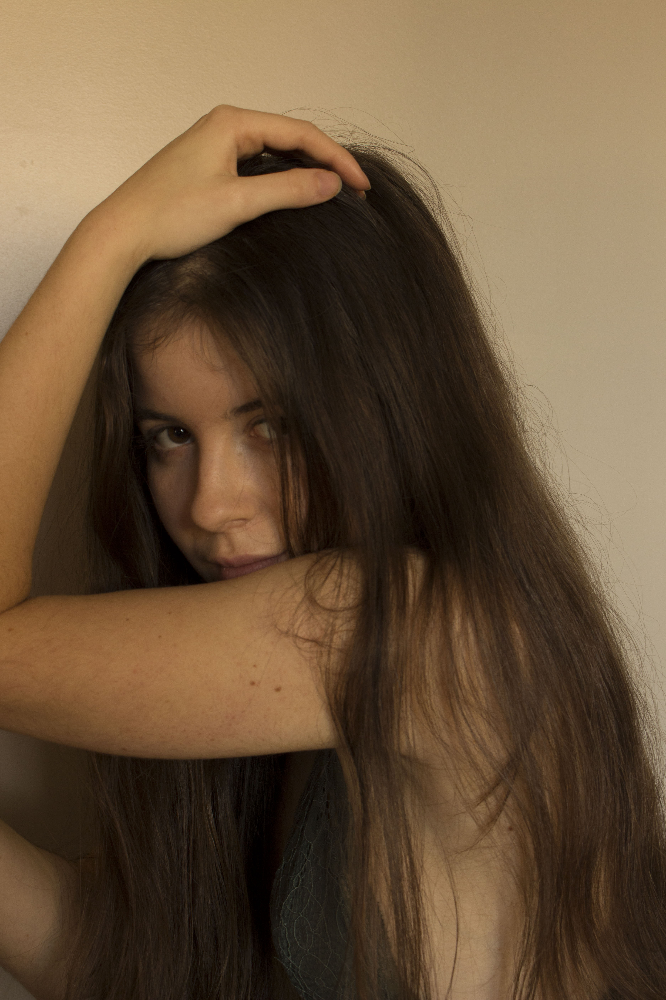

Beatriz Roxo (Correia). 21
Artes Visuais e Tecnologias, Escola Superior de Educação, IPL: from 2016 to 2019
I see art as an attempt to express and transform any type of sensations, emotions that form me into something physical, concrete and aesthetically beautiful. Photography and videography are the areas where I can feel more fulfilled and relieved in this search, being them my focus alongside multimedia, graphic design and painting.
Vejo a arte como uma tentativa de expressar e transformar todas as sensações que me ocupam em algo fisico, de uma forma mais concreta e bonita. Fotografia e video são as áreas em que mais me consigo sentir mais realizada e aliviada nesta procura, sendo então essas o meu foco, ao lado de multimédia e design gráfico.

// Contact: beaarcorreia@gmail.com